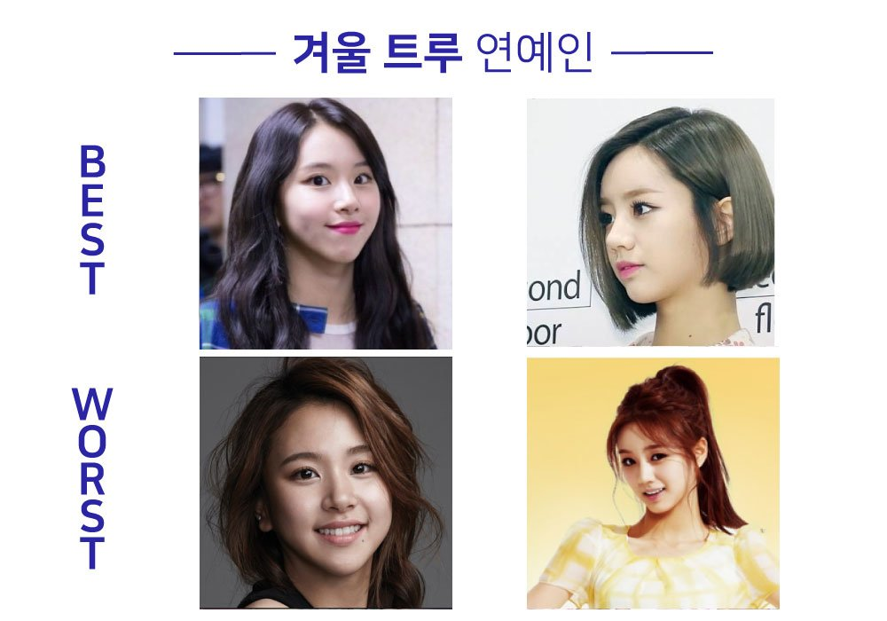
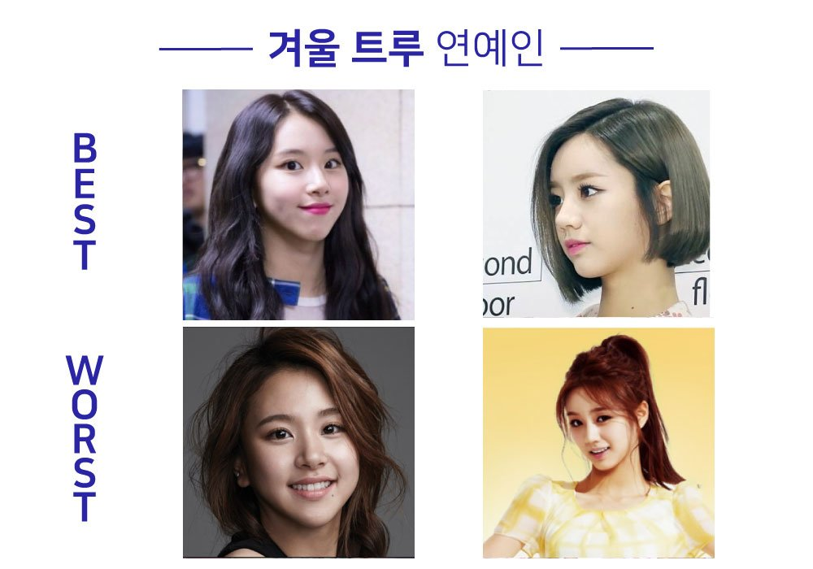

겨울 트루는 말그대로 겨울 쿨톤 정석인데요!
본래 카리스마 있고 도시적인 느낌을
가지신 분들이 많기 때문에
시크하고 깔끔하게 스타일링하시는 게 좋답니다!
깔끔하고 선명한 화이트 셔츠에 요즘 유행하는
롱부츠를 신으면 너무너무 잘 어울릴 것 같지 않나요?
강한 보색대비를 보여주는 색상으로 코디하면
얼굴이 더 환해보이기 때문에
블랙 앤 화이트로 무난하게 코디하면
웬만해선 다 잘 어울리실 거에요^^
무조건 쿨~하고 쨍~한 컬러면 뭐든 가능해서
쿨톤 기본 분홍부터 버건디 레드까지 모두
소화하실 수 있는 행운의 겨울 트루입니다^^
겨울 트루 특징은 다음과 같습니다.


 
